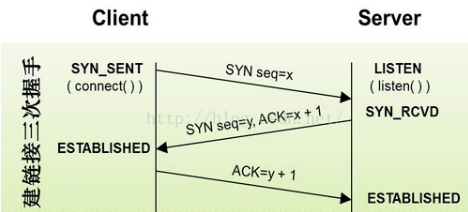

libevent库使用C语言编写，故使用此库需要一定c语言知识，同时，还需要了解和会使用C语言网络开发函数（socket,conect...)。
异步阻塞io
许多初学者往往都是使用阻塞式IO调用进行编程.当你调用一个同步IO的时候,除非操作系统已经完成了操作或者时间长到你的网络堆栈放弃的时候,否则系统是不会返回完成的.举个例子,当你调用"connect"做一个TCP连接的时候,你的操作系统必须排队处理来自发送到服务器的SYN包,除非等到SYN_ACK包从对面接收到,或者是超时,否则操作是不会返回给你的应用程序。
TCP三次握手
第一次握手:建立连接时,客户端发送syn包(syn=j)到服务器,并进入SYN_SENT状态,等待服务器确认;SYN:同步序列编号(Synchronize Sequence Numbers).第二次握手:服务器收到syn包,必须确认客户的SYN(ack=j+1),同时自己也发送一个SYN包(syn=k),即SYN+ACK包,此时服务器进入SYN_RECV状态;第三次握手:客户端收到服务器的SYN+ACK包,向服务器发送确认包ACK(ack=k+1),此包发送完毕,客户端和服务器进入ESTABLISHED(TCP连接成功)状态,完成三次握手.

这里有一个很简单的阻塞式网络调用的例子,它打开一个连接到www.baidu.com,发送它简单的HTTP请求,并打印输出到stdout. /* For sockaddr_in*/
#include <netinet/in.h>
/* For socket functions*/
#include <sys/socket.h>
/* For gethostbyname*/
#include <netdb.h>
#include <unistd.h>
#include <string.h>
#include <stdio.h>
int main(int c, char** v)
{
const char query[] =
"GET / HTTP/1.0\r\n"
"Host: www.baidu.com\r\n"
"\r\n";
const char hostname[] = "www.baidu.com";//百度的域名
struct sockaddr_in sin;
struct hostent* h;
const char* cp;
int fd;
ssize_t n_written, remaining;
char buf[1024];
/* Look up the IP address for the hostname. Watch out; this isn’t
* threadsafe on most platforms.*/
h = gethostbyname(hostname);//域名解析函数
if (!h) {
fprintf(stderr, "Couldn’t lookup %s: %s", hostname, hstrerror(h_errno));
return 1;
}
if (h->h_addrtype != AF_INET) {
fprintf(stderr, "No ipv6 support, sorry.");
return 1;
}
/* Allocate a new socket*/
fd = socket(AF_INET, SOCK_STREAM, 0);
if (fd < 0) {
perror("socket");
return 1;
}
/* Connect to the remote host*/
sin.sin_family = AF_INET;//ipv4
sin.sin_port = htons(80);//http使用80端口
sin.sin_addr = *(struct in_addr * )h->h_addr;//解析出百度的ip地址
if (connect(fd, (struct sockaddr * ) &sin, sizeof(sin))) {
perror("connect");
close(fd);
return 1;
}//建立连接
/* Write the query.*/
/* XXX Can send succeed partially?*/
cp = query;
remaining = strlen(query);
while (remaining) {
n_written = send(fd, cp, remaining, 0);//发送网页请求到baidu服务器
if (n_written <= 0) {
perror("send");
return 1;
}
remaining -= n_written;
cp += n_written;
}
/* Get an answer back.*/
while (1) {
ssize_t result = recv(fd, buf, sizeof(buf), 0);//接受服务器返回数据
if (result == 0) {
break;
} else if (result < 0) {
perror("recv");
close(fd);
return 1;
}
fwrite(buf, 1, result, stdout);//将数据答应到屏幕
}
close(fd);
return 0;
}
以上看到的网络系统调用，均为阻塞调用，即调用没有获得获得结果时，就一直停在那里，不会返回。
调用gethostbyname的去解析www.baidu.com的时候不等到它成功或者失败不会返回;调用connect的时候不等到它连接成功不会返回;调用recv的时候不等到它接受到数据或关连接关闭的时候不会返回;同样,调用send的时候至少等到待把输出区间待发送数据刷新到内核的写缓冲区之后才会返回.
现在看起来阻塞式IO还没有让人多厌烦,因为当你的程序在处理网络IO的同时不会处理其它业务,那么阻塞式IO能满足你的编程需求,但是想一下,当你想写一个程序支持多个连接,比如说需要同时从两个连接中读取数据,那么这个时候你就不知道到底先从哪个连接读取数据.
一个糟糕的例子:
/* This won’t work.*/
char buf[1024];
int i, n;
while (i_still_want_to_read())
{
for (i=0; i<n_sockets; ++i) {
n = recv(fd[i], buf, sizeof(buf), 0);
if (n==0)
handle_close(fd[i]);
else if (n<0)
handle_error(fd[i], errno);
else
handle_input(fd[i], buf, n);
}
因为如果数据到达fd[2]首先,程序甚至不会尝试从fd[2]读取数据,直到读取fd[0]和fd[1]得到一些完成数据的读取。如果fd[0]和fd[1]的客户一直不发送数据，则fd[3]的数据永远也不能被服务端接收。
有时候人们使用多线程或多进程服务来解决这个问题.最简单的方法就是让单独的每个进程或线程来处理它们各自的连接.由于每个连接都有自己的处理过程所以等待一个连接过程的阻塞IO方法的调用将不会影响到其它任何别的连接的处理过程.
这里有一个别的程序示例.这是一个很小的服务器,在端口40713上侦听TCP连接,每次一条一条地将数据读出来,当数据读出来的时候立刻进行R13加密,一条一条地写进输出缓冲区,在这个过程中它调用Unix fork()来创建一个新的过程来处理服务器接受到的连接.
* For sockaddr_in*/
#include <netinet/in.h>
/* For socket functions*/
#include <sys/socket.h>
#include <unistd.h>
#include <string.h>
#include <stdio.h>
#include <stdlib.h>
#define MAX_LINE 16384
char rot13_char(char c)
{
/* We don’t want to use isalpha here; setting the locale would
change which characters are considered alphabetical.*/
if ((c >= ’a’ && c <= ’m’) || (c >= ’A’ && c <= ’M’))
return c + 13;
else if ((c >= ’n’ && c <= ’z’) || (c >= ’N’ && c <= ’Z’))
return c - 13;
else
return c;
}
void child(int fd)
{
char outbuf[MAX_LINE+1];
size_t outbuf_used = 0;
ssize_t result;
while (1) {
char ch;
result = recv(fd, &ch, 1, 0);
if (result == 0) {
break;
} else if (result == -1) {
perror("read");
break;
}
/* We do this test to keep the user from overflowing the buffer.*/
if (outbuf_used < sizeof(outbuf)) {
outbuf[outbuf_used++] = rot13_char(ch);
}
if (ch == ’\n’) {
send(fd, outbuf, outbuf_used, 0);
outbuf_used = 0;
continue;
}
}
}
//从客户端获取数据，并加密，遇到换行符就将加密数据发送回去
void run(void)
{
int listener;
struct sockaddr_in sin;
sin.sin_family = AF_INET;
sin.sin_addr.s_addr = 0;
sin.sin_port = htons(40713);//监听本机所有ip地址的40713端口
listener = socket(AF_INET, SOCK_STREAM, 0);
#ifndef WIN32
{
int one = 1;
setsockopt(listener, SOL_SOCKET, SO_REUSEADDR, &one,
sizeof(one));
}
#endif
if (bind(listener, (struct sockaddr * )&sin, sizeof(sin)) < 0) {
perror("bind");
return;
}
if (listen(listener, 16)<0)
{
perror("listen");
return;
}
while (1)
{
struct sockaddr_storage ss;
socklen_t slen = sizeof(ss);
int fd = accept(listener, (struct sockaddr * )&ss, &slen);
if (fd < 0)
{
perror("accept");
}
else
{
if (fork() == 0)
{
child(fd);
exit(0);
}
}
}
}//循环处理，每接受一个客户端的连接，开辟一个子进程，并在子进程中处理此客户的连接
int main(int c, char** v)
{
run();
return 0;
}
那么,我们有了一个完美的解决方案来处理多个即时连接？不完全是.首先,进程创建(甚至线程创建)的代价在一些平台上可能会非常昂贵.在实际中,你可能更想使用一个线程池,而不是创建新的进程.但更重要的是,线程在规模上并不尽如人意.如果您的程序同事需要处理成千上万的连接,可能会效率极低因为cpu同时运行的线程只有屈指可数的几个.
但是如果连多线程都不能解决多个连接中的问题的话,那么还有什么别的方法？在Unix编程中,你就需要将你的socket设置成为非阻塞模式.Unix的调用方法如下:
fcntl(fd, F_SETFL, O_NONBLOCK);
这里fd代表的是socket的文件描述符.一旦你设置fd(套接字)为非阻塞模式,从那以后,无论什么时候,你调用fd函数都将立即完成操作或返回表示 "现在我无法取得任何进展,再试一次"的错误码.所以我们的两个套接字的例子可能会天真地写成下面的代码:
糟糕的例子:忙查询所有套接字
/* This will work, but the performance will be unforgivably bad.*/
int i, n;
char buf[1024];
for (i=0; i < n_sockets; ++i)
fcntl(fd[i], F_SETFL, O_NONBLOCK);
while (i_still_want_to_read())
{
for (i=0; i < n_sockets; ++i)
{
n = recv(fd[i], buf, sizeof(buf), 0);
if (n == 0)
{
handle_close(fd[i]);
}
else if (n < 0)
{
if (errno == EAGAIN)
;
/* The kernel didn’t have any data for us to read.*/
else handle_error(fd[i], errno);
}
else
{
handle_input(fd[i], buf, n);
}
}
}
现在我们正在使用非阻塞套接字,上面的代码会有效,但只有很少.性能将会很糟糕,有两个原因:首先,当任何连接中都没有数据的时候,该循环将继续,并且消耗完你的CPU;其次,如果你想处理一个或两个以上连接,无论有没有数据你都需要为每个连接调用系统内核.所以我们需要一种方法告诉内核:你必须等到其中一个socket已经准备好给我数据才通知我,并且告诉我是哪一个socket.解决这个问题人们常用的是select()方法.Select()方法的调用需要三套fd(数组),一个作为写,一个作为读,一个作为异常.该函数等待socket集合,并且修改这个集合以知道哪些socket可以使用了.
示例:使用select()
/* If you only have a couple dozen fds, this version won’t be awful*/
fd_set readset;//声明一个位数组1024位
int i, n;
char buf[1024];
while (i_still_want_to_read())
{
int maxfd = -1;
FD_ZERO(&readset);//清空位数组
/* Add all of the interesting fds to readset
*/
for (i=0; i < n_sockets; ++i)
{
if (fd[i]>maxfd) maxfd = fd[i];
FD_SET(fd[i], &readset);
}//加入文件描述符到位数组集合，并将最大文件描述符数值记下来，每次select返回位数组将被改变，每次返回处理结束都要重新设置位数组
/* Wait until one or more fds are ready to read*/
select(maxfd+1, &readset, NULL, NULL, NULL);//select系统调用阻塞到这里
/* Process all of the fds that are still set in readset*/
for (i=0; i < n_sockets; ++i)//当select返回时，位数组中只有发生响应的文件描述符对应位为1，其他位被设置为0
{
if (FD_ISSET(fd[i], &readset))
{//遍历所有被监听的文件描述符，并与发生响应的文件描述符对比
n = recv(fd[i], buf, sizeof(buf), 0);//读取数据
if (n == 0)
{
handle_close(fd[i]);//读取失败则关闭此文件描述符
}
else if (n < 0)
{
if (errno == EAGAIN)
;
/* The kernel didn’t have any data for us to read.*/
else
handle_error(fd[i], errno);
}
else
{
handle_input(fd[i], buf, n);
}
}
}
示例:基于select()的ROT13服务器
/* For sockaddr_in*/
#include <netinet/in.h>
/* For socket functions*/
#include <sys/socket.h>
/* For fcntl*/
#include <fcntl.h>
/* for select*/
#include <sys/select.h>
#include <assert.h>
#include <unistd.h>
#include <string.h>
#include <stdlib.h>
#include <stdio.h>
#include <errno.h>
#define MAX_LINE 16384
char rot13_char(char c)
{
/* We don’t want to use isalpha here; setting the locale
change which characters are considered alphabetical.*/
if ((c >= ’a’ && c <= ’m’) || (c >= ’A’ && c <= ’M’))
return c + 13;
else if ((c >= ’n’ && c <= ’z’) || (c >= ’N’ && c <= ’Z’))
return c - 13;
else
return c;
}
struct fd_state
{
char buffer[MAX_LINE];
size_t buffer_used;
int writing;
size_t n_written;
size_t write_upto;
};
struct fd_state*alloc_fd_state(void)
{
struct fd_state
* state = malloc(sizeof(struct fd_state));
if (!state)
return NULL;
state->buffer_used = state->n_written = state->writing =
state->write_upto = 0;
return state;
}
void free_fd_state(struct fd_state* state)
{
free(state);
}
void make_nonblocking(int fd)
{
fcntl(fd, F_SETFL, O_NONBLOCK);
}
int do_read(int fd, struct fd_state* state)
{
char buf[1024];
int i;
ssize_t result;
while (1)
{
result = recv(fd, buf, sizeof(buf), 0);//收取数据
if (result <= 0)
break;
for (i=0; i < result; ++i)
{
if (state->buffer_used < sizeof(state->buffer))
state->buffer[state->buffer_used++] = rot13_char(buf[i]);//加密数据并保存到state->buffer
if (buf[i] == ’\n’)
{
state->writing = 1;//遇到换行符结束读取
state->write_upto = state->buffer_used;
}
}
}
if (result == 0)
{
return 1;
}
else if (result < 0)
{
if (errno == EAGAIN)
return 0;
return -1;
}
return 0;
}
int do_write(int fd, struct fd_state * state)
{
while (state->n_written < state->write_upto)
{
ssize_t result = send(fd, state->buffer + state->n_written,
state->write_upto - state->n_written, 0);
if (result < 0)
{
if (errno == EAGAIN)
return 0;
return -1;
}
assert(result != 0);
state->n_written += result;
}
if (state->n_written == state->buffer_used)
state->n_written = state->write_upto = state->buffer_used = 0;
state->writing = 0;//重置
return 0;
}
void run(void)
{
int listener;
struct fd_state * state[FD_SETSIZE];
struct sockaddr_in sin;
int i, maxfd;
fd_set readset, writeset, exset;//设置三个位数组分别用来监听读写和退出
sin.sin_family = AF_INET;
sin.sin_addr.s_addr = 0;
sin.sin_port = htons(40713);
for (i = 0; i < FD_SETSIZE; ++i)
state[i] = NULL;//初始化结构
listener = socket(AF_INET, SOCK_STREAM, 0);
make_nonblocking(listener);
#ifndef WIN32
{
int one = 1;
setsockopt(listener, SOL_SOCKET, SO_REUSEADDR, &one, sizeof(one));
}
#endif
if (bind(listener, (struct sockaddr * )&sin, sizeof(sin)) < 0) {
perror("bind");
return;
}
if (listen(listener, 16)<0)
{
perror("listen");
return;
}
FD_ZERO(&readset);
FD_ZERO(&writeset);
FD_ZERO(&exset);//初始化三个位数组
while (1)
{
maxfd = listener;//第一次只监听listener
FD_ZERO(&readset);
FD_ZERO(&writeset);
FD_ZERO(&exset);//每次select返回都要重新设置位数组
FD_SET(listener, &readset);//加入listener到可读位数组
for (i=0; i < FD_SETSIZE; ++i)
{
if (state[i])
{
if (i > maxfd)
maxfd = i;
FD_SET(i, &readset);
if (state[i]->writing)
{
FD_SET(i, &writeset);
}
}//每当有连接建立时，会为此连接分配内存，当此内存中的buffer收到数据遇到换行符时结束读取，并置writing域为1，执行此循环
}//循环查看结构体数组state元素，并加入相应到位数组
if (select(maxfd+1, &readset, &writeset, &exset, NULL) < 0)//阻塞调用
{
perror("select");
return;
}//执行下面代表调用返回
if (FD_ISSET(listener, &readset))
{//如果是listener发生可读响应，证明有新的连接到来
struct sockaddr_storage ss;
socklen_t slen = sizeof(ss);
int fd = accept(listener, (struct sockaddr * )&ss, &slen);//接受连接
if (fd < 0)
{
perror("accept");
}
else if (fd > FD_SETSIZE)
{
close(fd);
}
else
{
make_nonblocking(fd);//设置此连接为非阻塞
state[fd] = alloc_fd_state();//根据其fd大小，为其在state中分配内存
assert(state[fd]);/* 分配出错退出*/
}
}
for (i=0; i < maxfd+1; ++i)
{//如果不是listener发生响应，则响应为客户端发来数据
int r = 0;
if (i == listener)
continue;//排除掉listener
if (FD_ISSET(i, &readset))
{
r = do_read(i, state[i]);
}//如果发生响应的文件描述符为可读，就调用read函数
if (r == 0 && FD_ISSET(i, &writeset))
{
r = do_write(i, state[i]);
}//发送state->buffer已经加密的数据给客户
if (r)
{//write成功后执行此条件，释放堆内存，并置原static数组响应元素为NULL
free_fd_state(state[i]);
state[i] = NULL;
close(i);
}
}
}
}
int main(int c, char** v)
{
setvbuf(stdout, NULL, _IONBF, 0);
run();
return 0;
}
这还没完,因为生成和读select()的二进制流花费的时间与需要的最大fd成正比,而当socket的数量非常大的时候,select()的花费将会更恐怖.
不同的操作系统提供了不同的替代select()功能的函数,例如poll()、eopll()、kqueqe()、evports和/dev/poll.这些都比select()具有更好的性能,除了poll()之外增加一个套接字、删除一个套接字以及通知套接字已经为IO准备好了这些动作的时间花费都是O(1).
不幸的是,这些都没有一个有效的接口统一标准.Linux有eopll(),BSD(包含Darwin)有kqueue(),Solaris有evports和/dev/poll,除此之外这些操作系统没有别的接口了.所以如果你想要写一个可移植的高效异步处理应用程序,你需要用抽象的方法封装这些所有的接口,并且提供其中最有效的方法.而libevent就是干这件事的。
这些都是LibEvent的API最底层工作的API,提供了可代替select()的各种方法的统一接口,在运行的计算机上使用可用的最有效的版本.
而libevent是什么呢？
LibEvent是用于编写高速可移植的非阻塞IO库,它的目标是:
可移植性:使用LibEvent编写的程序应该在LibEvent支持跨越的所有平台上工作,即使没有更好的方法来处理非阻塞式IO:LibEvent也应该支持一般的方法使程序可以运行在某些限制的环境中.
速度:LibEvent试图在每一个平台实现最快的非阻塞式IO,而不会引入太多的额外开销.
可扩展性:LibEvent设计为即使在成千上万的socket情况下也能良好工作.
方便:无论在什么情况下,用LibEvent来编写程序最自然的方式都应该是稳定可靠的.
LibEvent由下列组件构成:
evutil:用于抽象出不同平台网络实现的通用功能.
event and event_base:libevent的核心,为各种平台特定的、基于事件的非阻塞 IO后端提供抽象 API,让程序可以知道套接字何时已经准备好,可以读或者写,并且处理基本的超时功能,检测 OS信号.
bufferevent:为 libevent基于事件的核心提供使用更方便的封装.除了通知程序套接字已经准备好读写之外,还让程序可以请求缓冲的读写操作,可以知道何时 IO已经真正发生.(bufferevent接口有多个后端,可以采用系统能够提供的更快的非阻塞 IO方式 ,如 Windows中的 IOCP)
evbuffer:在 bufferevent层之下实现了缓冲功能,并且提供了方便有效的访问函数.
evhttp:一个简单的 HTTP客户端/服务器实现.
evdns:一个简单的 DNS客户端/服务器实现.
evrpc:一个简单的 RPC实现.
接下来将看到使用libevent编程实现的高速可移植的非阻塞的服务器。